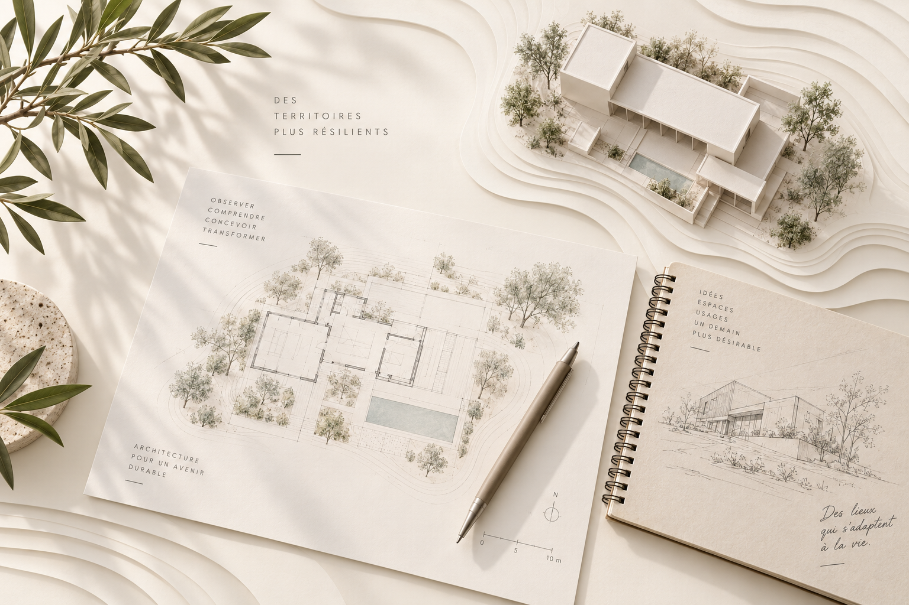
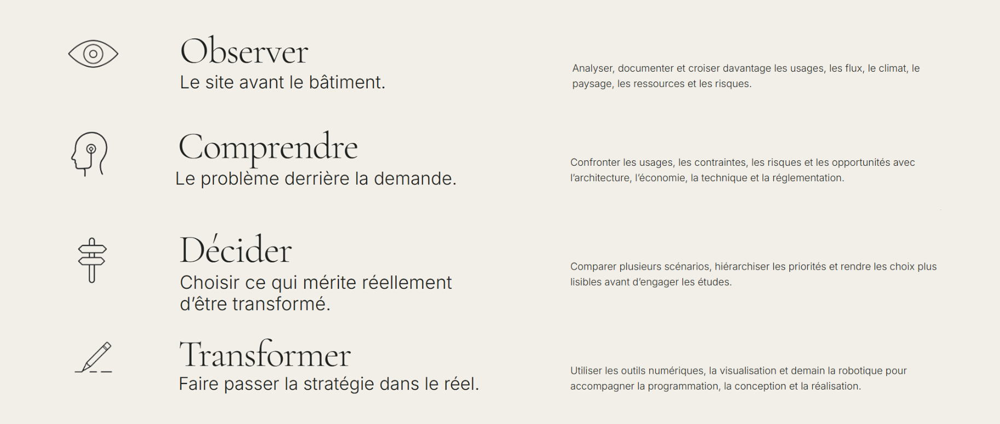

Observer
Le site avant le bâtiment.
Analyser, documenter et croiser davantage les usages, les flux, le climat, le paysage, les ressources et les risques.
NOTRE MÉTHODE
SC DESIGN FRANCE intervient là où la valeur d’un projet se joue souvent : avant la forme, au moment du diagnostic et de la décision.


Le site avant le bâtiment.
Analyser, documenter et croiser davantage les usages, les flux, le climat, le paysage, les ressources et les risques.
Le problème derrière la demande.
Confronter les usages, les contraintes, les risques et les opportunités avec l’architecture, l’économie, la technique et la réglementation.
Choisir ce qui mérite réellement d’être transformé.
Comparer plusieurs scénarios, hiérarchiser les priorités et rendre les choix plus lisibles avant d’engager les études.
Faire passer la stratégie dans le réel.
Utiliser les outils numériques, la visualisation et demain la robotique pour accompagner la programmation, la conception et la réalisation.
UN OUTIL TRANSVERSAL
L’intelligence artificielle appliquée à la conception et à la décision accompagne les quatre temps de la méthode. Elle augmente la capacité à observer, explorer, simuler, comparer et rendre les décisions plus lisibles — sans constituer une étape supplémentaire.
« Il y a du mérite sans élévation, mais il n’y a point d’élévation sans quelque mérite. »
— La Rochefoucauld
PREMIÈRE ÉTAPE
Présentez-nous votre territoire, votre bâtiment ou votre problématique.